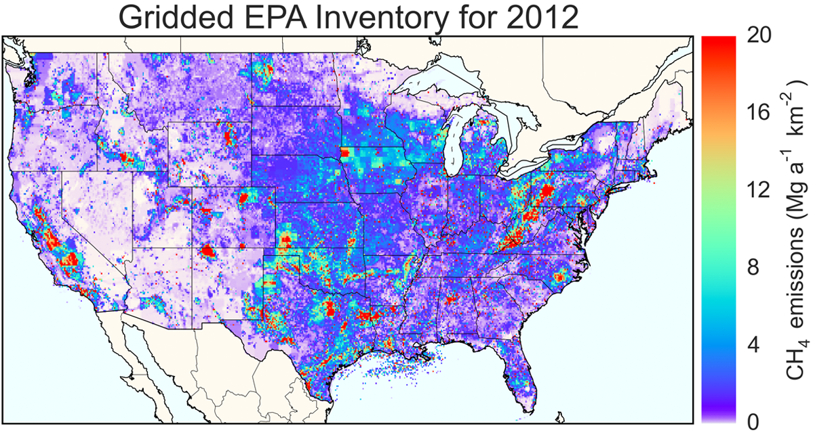

The US Environmental Protection Agency (EPA) produces annual estimates of national anthropogenic methane emissions in the Inventory of US Greenhouse Gas Emissions and Sinks. We created a 0.1° × 0.1° monthly version of the EPA inventory to be used a a priori for inversions of atmospheric data. We used a wide ensemble of data at the state, county, local, and point source level to create maps of all sources included in the inventory. Our gridded inventory allows a more direct comparison of observed methane concentrations to the EPA inventory, which paves the way for using these observations to improve the inventory. A full description of the gridded inventory can be found in our ES&T paper. The gridded emissions are available from the EPA website.

Total anthropogenic methane emissions in the gridded EPA inventory (Maasakkers et al., 2016)